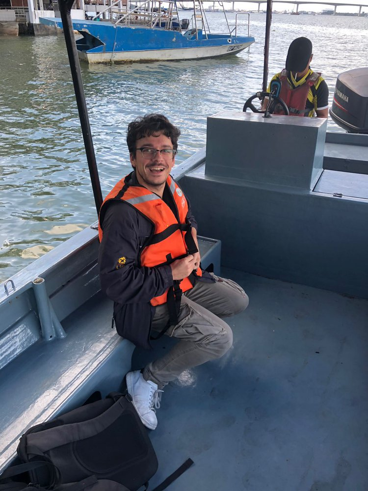
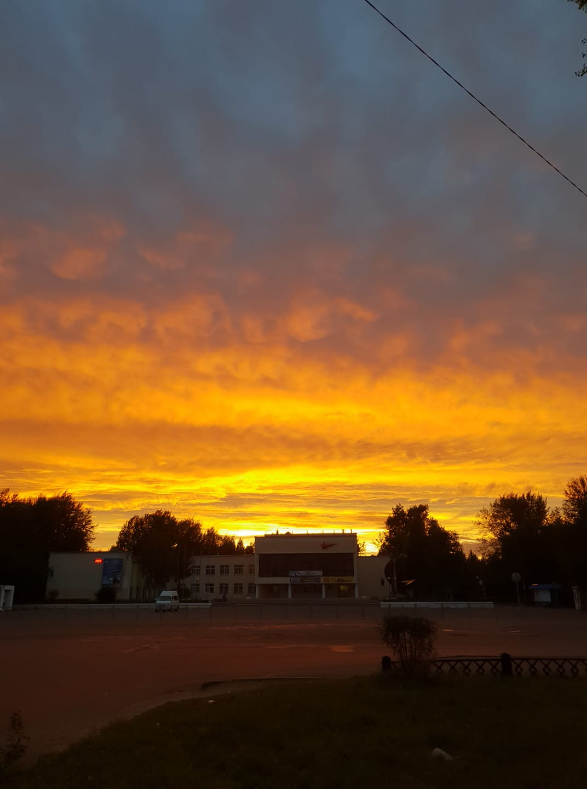

Prima trasferta 2010
Il progetto riguardava il revamping di una rampa da cui venivano varati i tubi depositati sul fondo del mare. Il nostro scopo di fornitura era relativo a bilancini che avrebbero guidato il tubo durante la posa in mare.
Ricordo ancora il freddo e il vento dell'Olanda, quando faceva "caldo" nevicava. Mi era stato chiesto di partire per tre giorni, giusto per farmi un'idea del lavoro. Il terzo giorno i miei responsabili, mi hanno chiesto se potevo rimanere ancora qualche giorno per seguire i lavori... Morale della favola i giorni sono diventati 30 di fila.
Da quel momento in poi per i successivi 12 anni ho passato gran parte del mio tempo all'estero.
Maggio 2011
Dopo aver concluso il primo progetto di varo di svariati km di linea, la nave posatubi si è fermata per manutenzione. Sono tornato a bordo per ritestare il funzionamento dell'impianto fornito, più altre attività di collaudo di nuovi equipment che ci erano stati commissionati. La trasferta è durata 35 giorni con turni molto pesanti, poichè si lavora 7 su 7 e minimo 12 ore al giorno.
Novembre 2011
Partenza per la Norvegia.
Scopo della fornitura un'HPU che doveva alimentare l'anello oleodinamico principale dello Scarabeo 8. Era la prima volta che veniva realizzata un'HPU con 9 gruppi motopompa. L'avviamento tutto sommato non ha creato problemi anche se qualche bagno d'olio non è mancato.
Febbraio 2012. Ottobre 2012.
Si torna in Norvegia
Scopo di fornitura un gruppo di 3 argani compensati che devono portare sul fondo un manifold ausiliario da utilizzare in abbinata con il BOP.
A differenza dell'HPU, questa macchina ha richiesto molto più lavoro del previsto perchè la logica di funzionamento è stata rivista a bordo a fronte delle richieste del cliente. Il clima estremamente rigido non ha sicuramente aiutato; poichè mi trovavo a Olensvag un posto isolato completamente dalla civiltà.
Dicembre 2012
Destinazione Indonesia... passando da Singapore
L'obiettivo era l'avviamento di 6 argani per tiri a terra.
Ottobre 2014
L'obiettivo era commissionare il sistema di ormeggio dell'FPSO
La trasferta è durata quasi 2 mesi nei quali sono state testate tutte le basi su cui il chain jack si sarebbe fissato e da cui avrebbe iniziato, l'operazione di tensionamento della catena.
Giugno 2015
Lancio Jacket
Era la prima volta che venivo coinvolto nel cosiddetto lancio del Jacket, operazione in cui un traliccio di circa 120 m, viene rilasciato in mare. Questo traliccio diventa poi la base per una stazione di estrazione. Lo scopo di fornitura era un sistema che spingesse questo traliccio prograssivamente verso il mare partendo da una bettolina. Ecco il link al video che è stato caricato su Youtube!
Novembre 2015
Finalmente ho avuto l'occasione di poter visitare quest'incredibile Stato: Singapore . L'archietettura del paesaggio ti toglie veramente il fiato. Obiettivo della fornitura, un'HPU per il comando di valvole sott'acqua tramite pressurizzazione dei comandi.
Gennaio 2017
Ritorno a Singapore per commissionare:
- un sistema di ormeggio catena composto da un Chain Jack
- un sistema di recupero Riser composto da un Linear Winch
- tutto il gruppo sopra alimentato da un'HPU composta da 4 gruppi motopompa, con 3 pompe in tandem.
- un'HPU per il comando di valvole subacque.
- un sistema di bloccaggio della torre.
- un serbatoio di raccorta di liquidi di scarto.
- un pannello di il monitoraggio della portata dei fluidi.
Maggio 2017
Mooring Pionero de Libra
Ecco che l'attività di test fatta in cantiere qualche mese prima, mi porta poi ad ormeggiare la nave. Per l'ormeggio sono state tensionate 9 catene arrivanto da un tiro di 160 ton.
Luglio 2017
Prelude

Finisce un ormeggio ed ecco che ne parte subito un altro. Questa era la prima volta che andavo in Austrilia e ho avuto anche qualche giorno per visitare Perth. La trasferta ha richiesto 75 giorni poichè il maltempo non è stato dalla nostra parte. Alla fine sono apparso in un video che documentava le fasi dell'ormeggio. Ecco il link al video.
Dicembre 2017
Riser Pionero de Libra
Dopo la prima fasi ormeggio tensionando le catene è stato il momento di collegare i Riser alla nave.
Maggio 2018
Tanajib
Era la prima volta che andavo nel deserto e non avevo mai provato cosa fossero 51°C all'ombra, semplicemente evaporavo! Scopo del lavoro era recuperare un tubo che veniva varato da una piattaforma poco a largo. La prima fare è andata bene usando la macchina, con il ciclo automatico. La seconda parte, quando il tiro aumentava, ha visto l'impiego di una fune da 4", peccato fosse fuori tolleranza e quindi ho dovuto operare completamente in manuale, 800 metri di linea.
Maggio 2018
Questa trasferta è stata più particolare delle altre, poichè dovevo fare da spettatore e non potevo operare direttamente sulla macchia. Scopo della fornitura era una macchina che facesse da freno mentre venivano stese le messaggere che poi sarebbero state sostituite da linee dell'alta tensione.
Giugno 2018
Brunei
In questa trasferta dovevo dare assistenza ad una macchina che non era stata realizzata da noi. Si trattata di tensionatori idraulici, il sistema aveva 30 anni e mi dicevano che non sono mai riusciti a sfruttare il massimo del potenziale del sistema. E' incredibile, ma il problema è che 4 tubetti di pilotaggio erano invertiti e quindi 2 dei 5 gruppi motopompa non entravano in funzione, vi lascio immaginare le facce dei tecnici che non avevano mai fatto caso a questo errore di connessione.
Agosto 2018
Russia
Era la prima volta che visitavo la Russia. Scopo di fornitura un argano con un cilindro in uscita con funzione di smorzatore quando il carico superava le 120 ton. Trasferta che si è rivelata più semplice del previsto.
Settembre 2018
Brasile
Ebbene si sono tornato nuovamente sul Pionero de Libra per concludere la connessione degli ultrimi 3 riser e per qualche anno sarei rimasto lontano da questa FPSO che ha lo scopo di testare il fondale e poi spostarsi per collaudare altri pozzi petroliferi.
Marzo 2019
Cina - Shenzhen
Eccomi entrare in uno stato per me nuovo, la Cina. Pensavo che il cibo fosse come quello dei ristoranti delle nostre zone e invece, non si avvicina nemmeno lontanamente! Scopo della fornitura:
- Argano doppio cabestano 300 ton, con Storage winch da 20 ton.
- Clampa con la possibilità di bloccare un carico di 600 ton.
- Plet (nell'immagine) per l'installazione di valvole subacque.
Aprile 2019
Cina
Scopo della fornitura un Aframe, il più alto mai realizzato: 25 metri. Il collaudo è stato più lungo del previsto poichè mi sono trovato di fronte a non pochi problemi, ma l'esperienza ne è valsa la pena. Tutto il 2019 è stato pieno di viaggio in Cina per assistenza al Cliente durante le operazioni in mezzo al mare.
Settembre 2020
Olanda
Ecco che mi dirigo per andare a bordo del Pioneering Spirit, la nave di costruzione più grande del mondo! Scopo di fornitura:
- 12 argani doppio cabestano.
- 8 argani monotamburo.
- 8 argani ausiliari.
- svariate pulegge motorizzate.
- 2 driven block sheave.
Luglio 2021
Brasile
Eccomi tornare a bordo del Pionero del Libra con l'obiettivo di disormeggiare la nave, disconnettere i riser, spostarsi di 10km e rifare tutto dall'inzio. Sono stato in mezzo al mare per ben 81 giorni!!! Sfido chiunque a ripetere l'impresa.